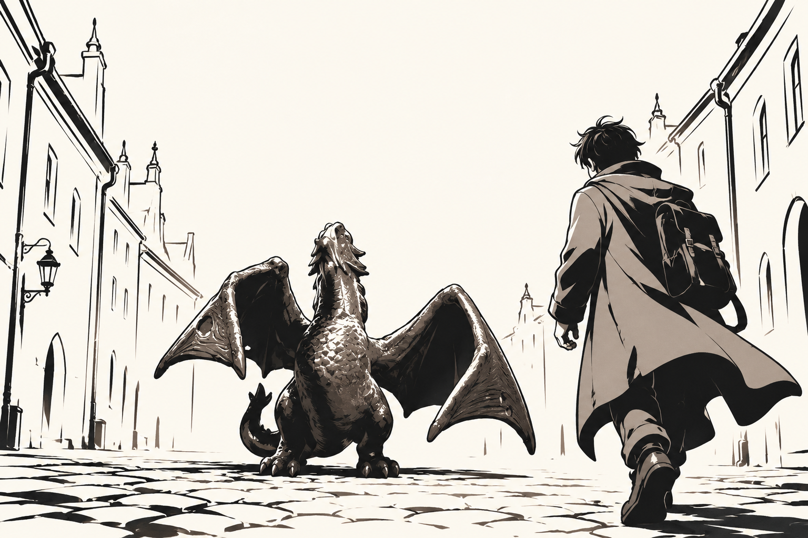
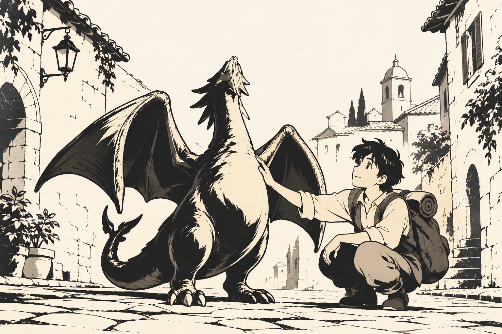

KUDY · новыя візуальныя напрамкіСустрэча, з якой пачынаецца гісторыя
Два макеты галоўнага экрана. Персанаж намаляваны па фота фігуркі заснавальніка: гэта даследаванне вобраза, не зацверджаная мадэль. Чарнільная анімэ-ілюстрацыя жыве ў гісторыі; кіраванне спакойнае і падпісанае.
A · Горад як кадр
Прастора вуліцы і сустрэча задаюць настрой, адразу пасля іх — адзін канкрэтны гід.
9:41●●● ▰
Гісторыі ў тваім тэмпеГорад расказвае.
Адна вуліца можа прывесці да цэлай гісторыі.

Ілюстрацыя да гісторыі · дэманстрацыйны кадр
Аўтарскі гід · прыкладЖураў і людзі порта
Пра працу, механізм і горад ля вады.
БеларускаяУ сваім парадку
Дэманстрацыйны гідЖураў і людзі порта
Прыклад таго, як выглядае ўваход у аўтарскую гісторыю. Сапраўдны тэкст і маршруты павінны прайсці рэдактуру.
Кропкі ў вольным парадкуМожна паглядзець змест і выбраць уласны тэмп.
У макеце няма файла для загрузкі.
Меню
Чатыры падпісаныя пераходы. Дзеянні можна націснуць.
Што працуе
Меню адкрывае ніжнюю панэль; радкі з назвай вядуць у адпаведны раздзел-дэма.
Адкрыць гід паказвае прэв’ю, не запускае прагулку або гук. Побач спачатку тлумачыць патрэбу ў месцазнаходжанні.
Б · Спадарожнік побач
Бліжэйшыя героі, менш вулічных дэталяў, больш паветра вакол асноўнага дзеяння.
9:41●●● ▰
Горад адкрываецца паступоваПойдзем глядзець?
Выбірай гісторыю. Ідзі так, як зручна табе.

Аўтарская сцэна · дэманстрацыйны кадр
Гід для пачатку · прыкладЖураў і людзі порта
Невялікая гісторыя пра працу, механізм і людзей.
Дэманстрацыйны гідЖураў і людзі порта
Прыклад таго, як выглядае ўваход у аўтарскую гісторыю. Сапраўдны тэкст і маршруты павінны прайсці рэдактуру.
Кропкі ў вольным парадкуМожна паглядзець змест і выбраць уласны тэмп.
У макеце няма файла для загрузкі.
Меню
Чатыры падпісаныя пераходы. Дзеянні можна націснуць.
Што адчуваецца пры дотыку
Зялёная кнопка апускаецца на 2 px і адкрывае наступны экран. Фокус мае выразны абрыс.
Недаступная загрузка у дэма называе прычыну. Малюнак не рэагуе на дотык і не прыкідваецца кнопкай.